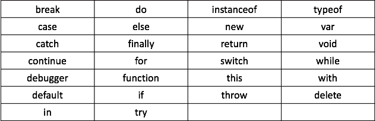
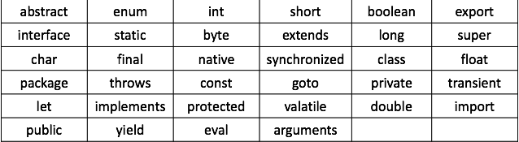

JavaScript 是一种由 Netscape 的 LiveScript 发展而来的原型化继承的基于对象的动态类型的区分大小写的客户端脚本语言，主要目的是为了解决服务器端语言，比如 Perl，遗留的速度问题，为客户提供更流畅的浏览效果。
当时服务端需要对数据进行验证，由于网络速度相当缓慢，只有 28.8kbps，验证步骤浪费的时间太多。于是 Netscape 的浏览器 Navigator 加入了 JavaScript，提供了数据验证的基本功能。
JavaScript，一种直译式脚本语言，是一种动态类型、弱类型、基于原型的语言，内置支持类型。它的解释器被称为 JavaScript 引擎，为浏览器的一部分，广泛用于客户端的脚本语言，最早是在 HTML 网页上使用，用来给HTML网页增加动态功能。然而现在 JavaScript 也可被用于网络服务器，如 Node.js。
ECMAScript 是一种由 Ecma 国际（前身为欧洲计算机制造商协会）通过 ECMA-262 标准化的脚本程序设计语言。这种语言在万维网上应用广泛，它往往被称为 JavaScript 或 JScript，但实际上后两者是 ECMA-262 标准的实现和扩展。
可以在HTML页面中的任何位置，使用 <script></script> 标签来插入 JavaScript。
值得注意的是: 在 HTML 页面中的不同位置，插入 JavaScript。执行地效果各不相同（执行顺序是自上而下）。
<script> 标签的属性说明:
| 属性名 | 描述 |
|---|---|
| type | text/javascript，指定使用的脚本语言。 |
| language | JavaScript，也是指定使用的脚本语言。弃用！ |
| src | 载入外部JavaScript脚本代码（路径可以是绝对路径和相对路径）。 |
值得注意的是: 如果编写 DOM 代码时，JavaScript 插入在 HTML 页面的位置是有区别的。
JavaScript 是一种区分大小写的语言。这意味着 JavaScript 的关键字、变量名、函数名、以及任何其他的标识符必须使用一致的大小写形式。比如 atguigu、Atguigu 或 ATGUIGU 是不同的变量名。
var atguigu = "atguigu";// 定义atguigu变量
console.log(atguigu);// 打印atguigu变量
var Atguigu = "Atguigu";// 定义Atguigu变量
console.log(Atguigu);// 打印Atguigu变量
var ATGUIGU = "ATGUIGU";// 定义ATGUIGU变量
console.log(ATGUIGU);// 打印ATGUIGU变量值得注意的是: 在 JavaScript 中定义变量名和函数名时应该特别注意。
JavaScript 会忽略出现在代码中的空格、制表符和换行符。
由于可以自由地在代码中使用空格、制表符和换行符，所以采用整齐、一致的缩进来形成统一的编码风格，从而提高代码的可读性显得尤为重要。
JavaScript 还可以识别水平制表符、垂直制表符、换页符等，JavaScript 将以下字符识别为行结束符：换行符、回车符、行分隔符、段分隔符等。回车符加换行符在一起被解析为一个单行结束符。
JavaScript 的语句一般是以一个分号作为结尾。当然，JavaScript 也允许忽略这个分号。如果省略分号，则由解释器确定语句的结尾，如下述代码：
var sum = a + b// 即使没有分号也是有效的语句 —— 不推荐
var diff = a - b;// 有效的语句 —— 推荐值得注意的是: 在 JavaScript 中，虽然语句结尾的分号不是必需的，但还是建议任何时候都不要省略。使用分号是一个非常好的编程习惯。
在编写 JavaScript 代码时，经常利用注释为代码添加说明。注释的内容会被 JavaScript 解释器/引擎忽略，JavaScript 支持两种格式的注释:
// 这里是单行注释/*
* 这里是多行注释
*/值得注意的是: 上述注释的第二行是以星号开始，但这并不是必需的。
JavaScript代码将多行组合成一个代码块，每个代码块一般是以左花括号（{）开始，以右花括号（}）结束。例如下述代码:
if(test){
test = false;
alert(test);
}值得注意的是: 一般在执行多行代码时才需要语句块，但最好是始终都使用花括号将代码块进行包裹。
JavaScript 定义了一组具有特定用途的关键字，这些关键字可用于表示语句的开始或结束、或者执行特定操作等。也就是说，定义变量名或、函数名或对象名时不能使用这些名称。

JavaScript 除了定义了一组关键字，还定义了一组同样不能作为变量名、函数名或对象名的保留字。保留字可能在将来被作为新的关键字出现的。

变量是存储数据信息的容器。
变量被认为是有名字的容器。在代码中，使用变量名为值命名，需要遵守一定的规则。
值得注意的是:
- 在 JavaScript 代码中，必须先声明一个变量，这个变量才能被使用。
- JavaScript 中的变量是弱类型的，也称之为松散类型的。所谓弱类型/松散类型就是可以用来保存任何类型的数据。
var v = 100;
v = "string";在 JavaScript 代码中，使用变量前应当先声明。变量是使用关键字 var 声明的。
var sum;// 值为undefined
var msg;// 值为undefinedvar x, y, z;// 值为undefinedvar sum = 100;// 值为 100
var msg = "this is message";// 值为 this is messagevar x = 0, y = 1, z = 2;值得注意的是: 等号（=）是赋值运算符。
变量的命名需要遵守一定的规则的，具体规则如下:
使用 var 语句重复声明变量是合法且无害的。但是如果重复声明并初始化的，这就表示重复声明并初始化。由于 JavaScript 变量只能存储一个数据，之前存储的数据会被覆盖。
var msg = "this is message";// 值为 this is message
var msg = 100;// 值为 100对声明的变量既可以读取操作，也可以赋值操作。
var message;// 只声明未初始化
console.log(message);// 输出 undefined
var msg = “this is message”;// 声明并初始化
console.log(msg);// 输出 this is messagevar message;// 只声明未初始化
message = "this is message";// 初始化操作
var msg = "this is message";// 值会被覆盖
msg = "this is another message";// 重新赋值常量就是一个只读（read-only）的变量。
常量与变量类似，同样用于存储数据信息。只是常量的数据一旦被定义，便不能被修改。
值得注意的是:
- 常量名习惯使用全大写形式。
- ECMAScript 5新增了声明常量使用的关键字 const。
- 如果省略const关键字，JavaScript会认为是一个变量。
var 关键字定义变量，人为规定值不改变，也可以是不严格的常量。var MY_CONST = 10;const 定义常量。const MY_FAV = 100;值得注意的是: 常量的声明，必须进行初始化操作，否则会报错误。
const FOO; // SyntaxError: missing = in const declaration
常量一旦被声明并初始化，值并不能被改变。常量的使用只能进行读取操作:
// 定义常量MY_FAV并赋值7
const MY_FAV = 7;
// 在 Firefox 和 Chrome 这会失败但不会报错(在 Safari这个赋值会成功)
MY_FAV = 20;
console.log(MY_FAV); // 输出 7
const MY_FAV = 20; // 尝试重新声明会报错
var MY_FAV = 20;// MY_FAV 保留给上面的常量，这个操作会失败
console.log(MY_FAV);// MY_FAV 依旧为7在 JavaScript 代码中，能够表示并操作值的类型称之为数据类型。
数据类型可分为可变类型和不可变类型。可变类型的值是可修改的，对象和数据就属于可变类型；不可变类型的值是不可修改的，数字、布尔值、null 和 undefined 都属于不可变类型。
字符串可以看成由字符组成的数组，可能被误认为是可变的。但在 JavaScript 中，字符串的值是不可变的。
原始类型，又称为原始值，是直接代表 JavaScript 语言实现的最底层的数据。
原始类型分别为 boolean 类型、number 类型和 string 类型三种。当然，有些资料将undefined 和 null 也归为原始类型（这里表示为特殊类型）。
声明变量并初始化值为原始类型，一般称之为字面量方式定义变量，也可以称之为直接量方式定义变量。
布尔（boolean）类型是指真或假、开或关、是或否。这个类型只有两个值：true 和 false。
值得注意的是:
- 由于 JavaScript 是区分大小写的，布尔类型的 true 和 false 全部是小写。
- JavaScript 也可以将其他类型的数据，自动转换为布尔类型。
| 数据类型 | 转换为 true 的值 | 转换为 false 的值 |
|---|---|---|
| boolean类型 | true | false |
| string类型 | 任何非空字符串 | “”（空字符串） |
| number类型 | 任何非零数字值（包括无穷大） | 0和NaN |
| object类型 | 任何对象 | null |
| undefined | undefined |
number 类型是指数字，JavaScript 不区分整数类型和浮点类型。
值得注意的是: 八进制或十六进制的数值最终会被转换成十进制数值。
浮点类型，就是指该数值包含整数部分、小数点和小数部分。
var floatNum1 = 0.1;
var floatNum2 = .1;// 有效，但不推荐值得注意的是:
- JavaScript允许小数点前可以没有整数，但不推荐这种写法。
- 保存浮点类型需要的空间是保存整数类型的两倍。
- 如果小数点后面没有任何数字，那这个数值作为整数类型保存。
var floatNum3 = 1.;// 小数点后面没有数字 —— 解析为 1
var floatNum4 = 10.0;// 整数 —— 解析为 10整数有无数个，但JavaScript通过浮点类型只能表示有限的个数（确切地说是 18 437 736 874 454 810 627个）。也就是说，当在JavaScript中使用浮点类型时，常常只是真实值的一个近似表示。如下述代码:
var x = .3 - .2;
var y = .2 - .1;
x == y;// 值为false，表示两值不相等
x == .1;// 值为false，.3-.2 不等于 .1
y = .1;// 值为true，.2-.1 等于 .1值得注意的是: 建议使用大整数表示金额。例如使用分作为单位，而不是使用元作为单位。
NaN（Not a Number），即非数值，是一个特殊的数值。
特点:
值得注意的是: 针对上述特点，JavaScript提供了isNaN( )函数。该函数用于判断计算结果是否为数值。
console.log(isNaN(10));// 输出false（10是一个数值）
console.log(isNaN("10"));// 输出false（可以被转换成数值 10）
console.log(isNaN("blue"));// 输出true（不能转换成数值）
console.log(isNaN(true));// 输出false（可以被转换成数值 1）string 类型用于表示由零或多个 16 位 Unicode 字符组成的字符序列，被称之为字符串。字符串可以由双引号（"）或单引号（'）表示。
var firstString = "Nicholas";
var secondString = 'Zakas';string类型包含一些特殊的转义字符，用于表示非打印字符。
| 转义字符 | 含义 |
|---|---|
| \n | 换行符 |
| \t | 制表符 |
| \b | 退格符 |
| \r | 回车符 |
| \f | 换页符 |
| \ | 斜杠 |
| \' | 单引号（'），在用单引号表示的字符串中使用。 |
| " | 双引号（"），在用双引号表示的字符串中使用。 |
由于 JavaScript 是弱类型/松散类型的，因此需要有一种手段来检测给定变量的数据类型。typeof 运算符就是负责提供这方面信息，如下述代码:
var message = "this is message";
console.log(typeof message);// 输出 string
console.log(typeof(message));// 输出 string值得注意的是: typeof 运算符加上圆括号，会像是函数，而不是运算符，并不建议这种写法。
| 值 | 类型 |
|---|---|
| true或false | boolean |
| 任意数字或NaN | number |
| 任意字符串 | string |
| null | object |
本笔记的内容免费开源，任何人都可以免费学习、分享，甚至可以进行修改。但需要注明作者及来源，并且不能用于商业。
本笔记采用知识共享署名-非商业性使用-禁止演绎 4.0 国际许可协议进行许可。